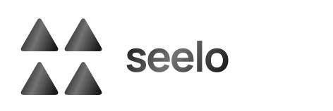
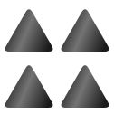
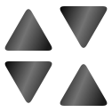
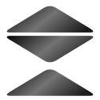
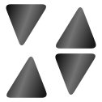

삼각형은 4개 이하. 심볼 정사각형의 채움 비율은 33% 이상.
정삼각형 3안 · 이등변삼각형 3안 · 부등변삼각형 3안 / 단색·반전·그라데이션
채움 비율은 120×120 정사각형에서 둥근 모서리와 겹침을 반영해 계산했습니다. seelo 글자는 제외합니다.
동일 방향 · 2×2 반복



상하 교차 · 대각의 반복


한 모듈 · 네 방향 회전
직각 이등변 2개 · 좁은 사선 틈
직각 이등변 4개 · 반전 반복
낮고 넓은 삼각형 3개 · 교차 적층


서로 다른 두 삼각형 · 비대칭 분할
비율이 다른 삼각형 3개 · 맞물린 여백
기울어진 중심 · 동일 모듈의 반복


선택한 안이 없습니다. 필터를 끄고 번호 옆 체크박스로 골라주세요.